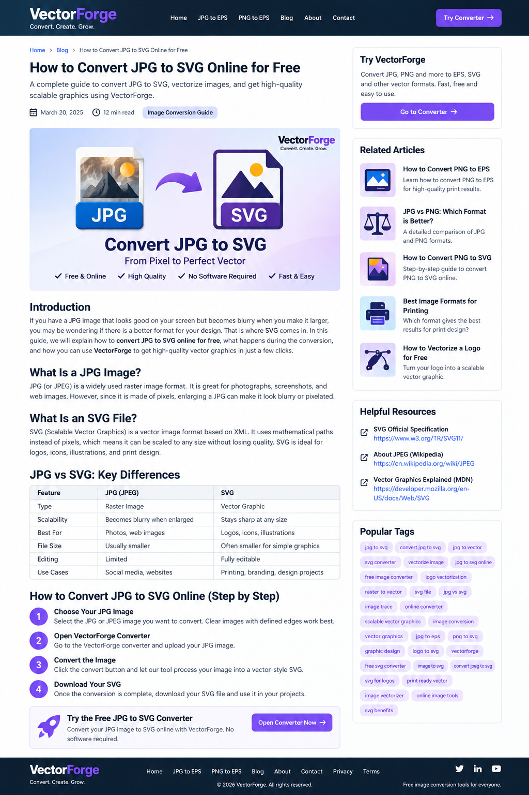

How to Convert JPG to SVG Online for Free
Learn how to convert JPG to SVG online for free, understand the difference between JPG and SVG, vectorize JPG images and convert logos into scalable graphics using VectorForge.

If you have a JPG image that looks good on your screen but becomes blurry when you make it larger, you may be wondering if there is a better format for your design.
That is where SVG comes in. SVG stands for Scalable Vector Graphics. Unlike a JPG, an SVG can be scaled to different sizes while keeping its shapes and edges sharp.
In this guide, we will explain how to convert JPG to SVG online, what happens during the conversion, which images work best and how you can use VectorForge to convert your image directly in your browser.
What Is a JPG Image?
JPG, also known as JPEG, is one of the most common image formats on the internet. JPG files are raster images, which means they are made from pixels.
JPG is excellent for photographs, screenshots, website images and many everyday graphics. However, enlarging a JPG too much can make the image look soft or pixelated.
This is one reason people search for a JPG to SVG converter.
What Is an SVG File?
SVG means Scalable Vector Graphics. It is a vector graphics format that describes artwork using shapes, paths and other vector information.
The major advantage of SVG is scalability. An SVG graphic can be displayed at different sizes while retaining sharp edges.
You can learn more about the SVG standard from the official W3C SVG specification .
JPG vs SVG: What's the Difference?
The biggest difference between JPG and SVG is how they represent graphics. A JPG is a raster image made from pixels, while SVG is a vector format.
| Feature | JPG / JPEG | SVG |
|---|---|---|
| Type | Raster image | Vector graphic |
| Scalability | Can become blurry when enlarged | Scales cleanly |
| Best for | Photos and web images | Logos, icons and illustrations |
| Editing | Pixel based | Vector based |
| Common use | Photography and websites | Branding, design and scalable graphics |
How to Convert JPG to SVG Online
If you want to convert JPG to SVG online, you can use a browser-based converter instead of installing complicated software.
Choose Your JPG Image
Start with the JPG or JPEG image you want to convert. Images with clear edges and good contrast usually work better for vectorization.
Open the VectorForge Converter
Open the VectorForge image converter and upload your JPG image.
Convert the Image
Start the conversion and let VectorForge process your image into an SVG output.
Download Your SVG
Once the conversion is complete, download your SVG file and use it in compatible design projects.
Try the Free JPG to SVG Converter
Convert your JPG image directly in your browser with VectorForge. No complicated installation is required.
Open VectorForge Converter →Which JPG Images Work Best for SVG Conversion?
Not every JPG produces the same result when converted to SVG. The quality and complexity of the original image matter.
Clear Edges
Images with clearly defined edges are generally easier to trace than images with extremely soft boundaries.
Simple Graphics
Logos, icons, symbols and simple illustrations are often good candidates for vectorization.
Good Contrast
Strong contrast between the subject and background can make important shapes easier to identify.
Higher Resolution
Starting with a reasonably clear JPG can help the conversion process identify details more accurately.
Can You Convert a JPG Logo to SVG?
Yes. One common reason people want to convert a JPG logo to SVG is that they only have a raster copy of their logo.
A vectorized logo can be useful for business cards, websites, T-shirts, product packaging, signs, posters, stickers and social media graphics.
If your logo is currently available as a JPG, you can start with the VectorForge converter.
JPG to Vector: What Does It Mean?
You may also see the term JPG to vector when searching for an image conversion tool.
When people say they want to vectorize a JPG, they usually mean transforming raster artwork into vector-style graphics.
SVG is one of the most popular vector formats for this purpose. This is why searches such as JPG to vector, vectorize JPG, JPG image to vector and image to vector are closely related.
Can You Convert JPG to SVG Without Illustrator?
Yes. You do not necessarily need Adobe Illustrator for a basic JPG to SVG conversion.
Browser-based tools can provide a simpler workflow for beginners, small businesses, content creators and anyone who only occasionally needs to convert JPG to SVG without Illustrator.
JPG to SVG Without Software
An online JPG to SVG converter can be useful when you do not want to install professional design software just to convert an image.
A browser-based workflow can save time for quick logo conversions, simple illustrations and basic design assets.
What Is JPG to SVG Vectorization?
The process is commonly called image vectorization or vector tracing.
The basic idea is to analyze raster artwork and create vector paths or shapes that represent the visible parts of the image.
A JPG is pixel-based, while a vector graphic describes shapes and paths. This difference is what makes vector graphics useful for scalable designs.
Does Converting JPG to SVG Always Make the Image Perfect?
No. A converter cannot automatically recreate every detail of a complex photograph as a perfect vector illustration.
Photographs contain detailed textures, gradients and subtle colors. Simple graphics such as logos, icons and illustrations generally work better for vectorization.
JPG to SVG for Printing
SVG can be useful for graphics that need to be displayed at different sizes. For example, the same logo may be required on a small business card and a large sign.
The exact file format required by a printer depends on the project. Some printers may request SVG, EPS, PDF or another format.
If you also need an EPS file, you can use our JPG to EPS converter.
JPG to SVG for Logos and Branding
Branding is one of the strongest use cases for vector graphics. A company logo may appear on websites, social media, packaging, business cards, advertisements and signs.
Having a scalable version of the logo can make it easier to adapt artwork for different sizes.
JPG vs PNG: Which Format Should You Use?
JPG and PNG are both popular raster image formats, but they are useful for different purposes.
JPG is commonly used for photographs and compressed web images. PNG is useful when you need transparency or lossless image quality.
If you have a PNG image and need an EPS file, see our PNG to EPS converter.
Useful SVG Resources
If you want to learn more about SVG and web graphics, these authoritative resources are useful:
Frequently Asked Questions
How do I convert JPG to SVG?
Upload your JPG image to a JPG to SVG converter such as VectorForge, process the image and download the resulting SVG file.
Is there a free JPG to SVG converter?
Yes. Browser-based tools can provide free JPG to SVG conversion. You can try the VectorForge converter directly in your browser.
Can I convert JPEG to SVG?
Yes. JPG and JPEG are commonly used names for the same image format family, and compatible JPEG images can be converted to SVG.
Can I convert JPG to SVG without Illustrator?
Yes. You can use a browser-based JPG to SVG converter instead of installing professional vector editing software.
Can I convert a JPG logo to SVG?
Yes. Logos with clear shapes and good contrast are often suitable candidates for vectorization.
Is SVG better than JPG?
Neither format is universally better. JPG is excellent for photographs, while SVG is particularly useful for scalable graphics such as logos, icons and illustrations.
What is the difference between JPG and SVG?
JPG is a raster image format made from pixels. SVG is a scalable vector graphics format based on vector information.
What does vectorize JPG mean?
Vectorizing a JPG means converting raster artwork into vector-style graphics represented through paths and shapes.
Final Thoughts
Converting a JPG to SVG can be useful when you need a graphic that is easier to scale and work with across different design projects.
The process is particularly useful for logos, icons, illustrations and other graphics with clear shapes.
If you only have a JPG but need an SVG, you do not necessarily need complicated desktop software. A browser-based JPG to SVG converter can provide a convenient starting point.
Try your image with VectorForge and see how the converted SVG works for your project.